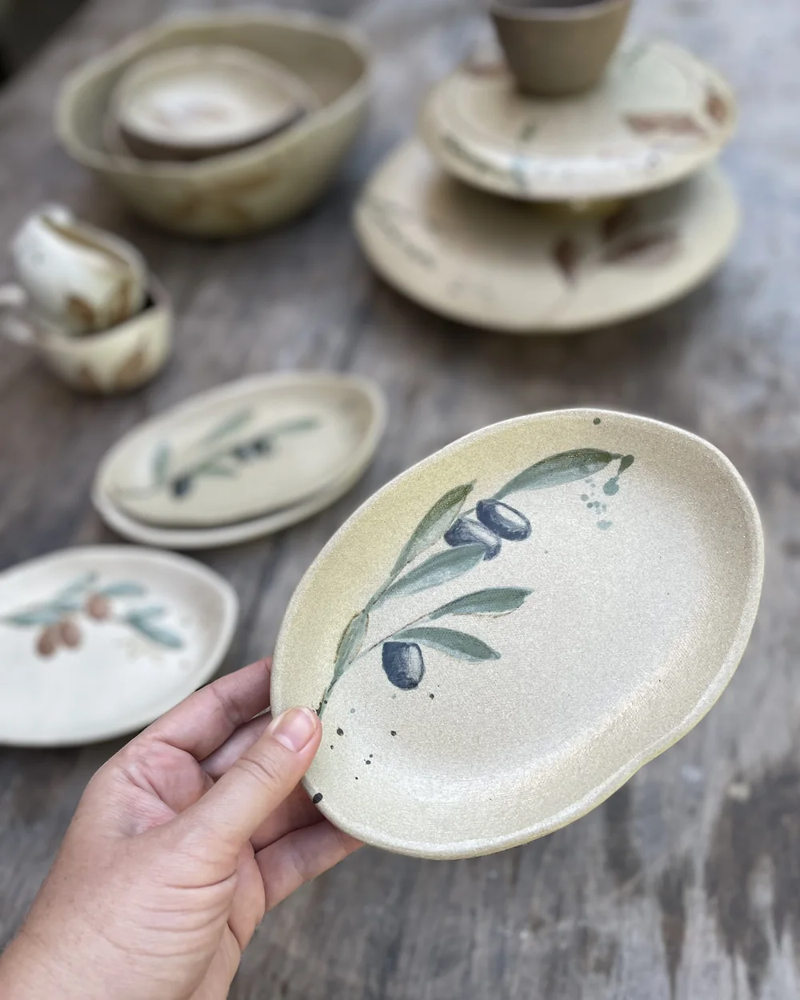

Imersão Aquarela em Cerâmica
Próxima turma: sábado, 17/10/2026 · 8h às 17h30ver agenda →Um dia inteiro mergulhado no universo da pintura em cerâmica. 7 horas de teoria e prática — aprofundamento, técnica, cor e composição — divididas em dois módulos. Sem precisar de experiência.

Módulo 1 — Fundamentos da Aquarela
8h às 11h30
Vamos conhecer as características da aquarela em cerâmica, os materiais e pincéis, as diferentes pinceladas, transparência, camadas e intensidade de cor. Com demonstração e prática de pintura de folhas e flores.
Módulo 2 — Cor, Profundidade e Composição
14h às 17h30
Mergulho na construção de paletas, círculo cromático, combinação de cores, luz e sombra, profundidade e maneiras de simplificar desenhos mais complexos. E, claro, muita prática de pintura em cerâmica.
O que está incluso
- 7 horas de aprendizado com demonstrações e muita prática
- Kit de Aquarelas e Gizes da Terra
- Guia em PDF com os tópicos do curso
Sua peça
Ao longo do dia, você desenvolve a sua própria pintura em uma peça cerâmica. Pode trazer suas peças biscoitadas ou comprar no ateliê. Depois do curso, você leva suas peças para a queima onde preferir ou contrata conosco o serviço de queima e envio.
Onde é?
A imersão acontece no Studio Alice, o ateliê da Alice em Uberlândia — um ambiente de cerâmica, luz natural e calma.
📍 Uberlândia/MG (endereço exato enviado na confirmação)
🍽 Almoço não incluso — o intervalo é das 11h30 às 14h.
Pra quem é
Pra quem ama cerâmica, pintura e cor e sempre quis aprender a trabalhar com aquarela sobre peças cerâmicas. Não precisa de experiência — só um dia inteiro pra desacelerar, aprender, se divertir e mergulhar na aquarela.
R$ 600 no Pix ou 2x R$ 318 no cartão — pagamento seguro via Mercado Pago.
Garantir minha vaga — R$600 💬 Falar no WhatsAppTurmas pequenas, vagas limitadas. Confirmação da inscrição após o pagamento.
Peças de verdade, gente de verdade
Pinturas reais do ateliê — direto do Instagram. Sua vez de criar a sua!
Carregando…
Ficou com alguma dúvida?
Preciso ter experiência para participar?
Como funciona o dia?
Preciso levar alguma peça?
O que eu levo pra casa?
Um dia para desacelerar, aprender e mergulhar na aquarela
Mais do que técnica, você vai compreender o comportamento da cor e da aquarela sobre a cerâmica — inclusive as transformações que acontecem depois da queima.
Ficou alguma dúvida? Fale comigo